정보처리기능사 (2002-07-21 기출문제)
1과목: 전자 계산기 일반
1. 중앙처리장치의 구성 요소로서 거리가 먼 것은?
- 제어장치
- 기억장치
- 입력장치
- 연산장치
(정답률: 60%)

2. 드모르간(De Morgan)의 정리에 의하여
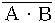
를 바르게 변환시킨 것은?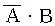
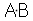
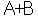
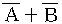
(정답률: 79%)
3. 아래 회로도에 해당하는 논리회로는?
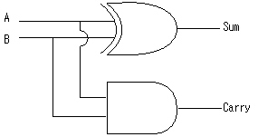
- 플립플롭
- 전가산기
- 반가산기
- 전감산기
(정답률: 80%)
4. 논리적 연산의 종류에 해당되지 않는 것은?
- AND
- ADD
- rotate
- OR
(정답률: 63%)
5. 주기억장치에서 기억장치의 지정은 무엇에 따라 행하여 지는가?
- 어드레스(Address)
- 블록(Block)
- 필드(Field)
- 레코드(Record)
(정답률: 69%)
6. 에러를 검출하고 검출된 에러를 교정하기 위하여 사용되는 코드는?
- ASCII 코드
- BCD 코드
- 8421 코드
- Hamming 코드
(정답률: 86%)
7. 원판형의 자기디스크 장치에서 하나의 원으로 구성된 기억공간으로, 원판형을 따라 동심원으로 나눈 것은?
- 헤드(Head)
- 릴(Reel)
- 트랙(Track)
- 실린더(cylinder)
(정답률: 76%)
8. 2진수 1110 을 10진수로 변환하면?
- 14
- 11
- 13
- 12
(정답률: 70%)
9. 컴퓨터 시스템의 중앙처리 장치를 구성하는 하나의 회로로서, 컴퓨터 안에서 산술연산 및 논리연산을 수행하는 장치는?
- Arithmetic Logic Unit
- Memory Unit
- Associative Memory unit
- Punch Card System
(정답률: 69%)
10. 진리표가 다음표와 같이 되는 논리회로는?
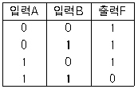
- NAND 게이트
- AND 게이트
- NOR 게이트
- OR 게이트
(정답률: 78%)
11. JK 플립플롭에서 J에 0, K에 0이 입력되면 동작상태는 어떻게 되는가?
- 변화 없음
- Set 상태
- 반전
- Clear 상태
(정답률: 74%)
12. 10진수 0.625를 2진수로 변환할 경우 올바른 값은?
- 0.011(2)
- 0.101(2)
- 0.100(2)
- 0.111(2)
(정답률: 63%)
13. 명령의 오퍼랜드 부분에 실제 데이터가 기록되어 있어 메모리 참조를 하지 않고 데이터를 처리하는 방식으로 수행 시간이 빠르지만 오퍼랜드 길이가 한정되어 실제 데이터의 길이에 제약을 받는 주소 지정 방식은?
- Direct Addresing
- Immediate Addressing
- Relative Addressing
- Indirect Addressing
(정답률: 65%)
14. 스택 구조의 컴퓨터에서 필요하며, 연산 명령에서는 번지 필드가 필요없고 명령어만 존재하고, push, pop 명령에서는 하나의 번지 필드가 필요한 명령 형식은?
- 0-번지 명령 형식
- 1-번지 명령 형식
- 2-번지 명령 형식
- 3-번지 명령 형식
(정답률: 71%)
15. 입·출력 채널(channel)에 대한 설명으로 옳지 않은 것은?
- 많은 입·출력 장치를 동시에 독립적으로 동작시킨다.
- 시스템의 처리 능력을 향상시키는 일을 한다.
- 입·출력 조작의 시간과 중앙처리장치의 처리 시간과의 불균형을 보완하는 기구이다.
- 고속의 입·출력장치에는 바이트 멀티플렉서 채널을 사용한다.
(정답률: 29%)
16. 표준 2진화 10진 코드가 표현할 수 있는 최대 문자 수는?
- 32
- 256
- 128
- 64
(정답률: 29%)
17. 레지스터의 종류 중 프로그램의 수행순서의 제어를 위한 레지스터는?
- 기억장치 주소 레지스터(MAR)
- 누산기 레지스터(AC)
- 프로그램 주소 레지스터(PAR)
- 명령 레지스터(IR)
(정답률: 40%)
18. 컴퓨터시스템이 주어진 환경 아래에서 자신의 담당 기능을 원할하게 수행할 수 있는 능력의 척도를 나타내는 것은?
- 호환성
- 가용성
- 신뢰성
- 안정성
(정답률: 43%)
19. 고급언어나 코드화된 중간언어를 입력받아 목적프로그램 생성없이 직접 기계어를 생성, 실행해주는 프로그램은?
- 어셈블러(Assembler)
- 인터프리터(Interpreter)
- 컴파일러(Compiler)
- 크로스 컴파일러(Cross Compiler)
(정답률: 44%)
20. 자기 테이프 장치에서 보다 많은 데이터를 저장하고, 처리 속도를 빠르게 하기 위한 방법은?
- 버퍼링
- 매핑
- 스풀링
- 블록킹
(정답률: 28%)
2과목: 패키지 활용
21. 데이터베이스 시스템의 구성 요소로 가장 적절한 것은?
- 개념 스키마, 핵심 스키마, 구체적 스키마
- 외부 스키마, 핵심 스키마, 내부 스키마
- 개념 스키마, 구체적 스키마, 응용 스키마
- 외부 스키마, 개념 스키마, 내부 스키마
(정답률: 85%)
22. 수치 계산과 관련된 업무에서 계산의 어려움과 비효율성을 개선하여 전표의 작성, 처리, 관리를 쉽게 할 수 있도록 한 것은?
- 워드프로세서
- 프리젠테이션
- 데이터베이스
- 스프레드시트
(정답률: 77%)
23. 데이터베이스 디자인 단계의 순서가 옳은 것은?
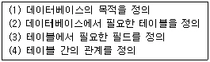
- (1)-(4)-(2)-(3)
- (1)-(3)-(2)-(4)
- (1)-(2)-(4)-(3)
- (1)-(2)-(3)-(4)
(정답률: 70%)
24. 프리젠테이션에서 사용하는 하나의 화면을 의미하는 것은?
- 프로젝트
- 슬라이드
- 셀
- 워크시트
(정답률: 88%)
25. 데이터베이스에서 사용되는 용어 중 데이터의 크기가 작은 것에서 부터 큰 순서로 이루어진 것은?
- 데이터 < 필드 < 레코드 < 파일
- 데이터 < 레코드 < 필드 < 파일
- 데이터 < 레코드 < 파일 < 필드
- 데이터 < 필드 < 파일 < 레코드
(정답률: 55%)
26. 스프레드시트 작업에서 반복되거나 복잡한 단계를 수행하는 작업을 일괄적으로 자동화시켜 처리하는 방법에 해당 하는 것은?
- 필터
- 검색
- 정렬
- 매크로
(정답률: 85%)
27. 다음 SQL 문에서 COUNT(*)의 기능은?
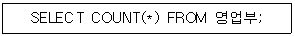
- 열들의 개수를 계산한다.
- 행들의 개수를 계산한다.
- 영업부 테이블을 삭제한다.
- 영업부 테이블을 생성한다.
(정답률: 47%)
28. SQL 명령문 중 "DROP TABLE 학생 RESTRICT" 의 의미가 가장 적절한 것은?
- 학생 테이블만을 제거한다.
- 학생 테이블이 다른 테이블에 의해 참조중이면 제거하지 않는다.
- 학생 테이블과 이 테이블을 참조하는 다른 테이블도 함께 제거한다.
- 학생 테이블을 제거할지의 여부를 사용자에게 다시 물어본다.
(정답률: 57%)
29. 다음 SQL 검색문의 의미로 옳은 것은?
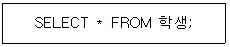
- 학생 테이블에서 첫번째 레코드의 모든 필드를 검색하라.
- 학생 테이블에서 마지막 레코드의 모든 필드를 검색하라.
- 학생 테이블에서 전체 레코드의 모든 필드를 검색하라.
- 학생 테이블에서 "*" 값이 포함된 레코드의 모든 필드를 검색하라.
(정답률: 74%)
30. SQL에서 데이터 검색을 할 경우 검색된 결과값의 중복 레코드를 제거하기 위해 사용되는 옵션은?
- distinct
- *
- all
- cascade
(정답률: 68%)
3과목: PC 운영 체제
31. Windows 98의 Windows탐색기에서 단축아이콘을 만드는 방법이 아닌 것은?
- [파일] - [새로 만들기] - [바로가기]
- [보기] - [바로가기 만들기]
- [파일] - [바로가기 만들기]
- [단축메뉴] - [바로가기 만들기]
(정답률: 37%)
32. 다음 도스(MS-DOS) 명령의 의미를 옳게 설명한 것은?
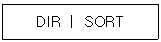
- SORT라는 파일을 파일 목록에 추가한다.
- 파일 목록을 이름순으로 정렬하여 출력한다.
- 파일 목록을 확장자순으로 정렬하여 출력한다.
- 파일 목록을 SORT라는 파일에 기록한다.
(정답률: 42%)
33. 운영체제의 성능 평가 요인으로 가장 거리가 먼 것은?
- Throughput
- Availability
- Turnaround Time
- Security
(정답률: 32%)
34. 도스(MS-DOS)에서 필터로 사용할 수 있는 명령어가 아닌 것은?
- MORE
- FIND
- EXPAND
- SORT
(정답률: 47%)
35. Windows 98에서 바탕화면 구성요소 중 파일이나 폴더를 상징하는 조각그림으로, 프로그램을 실행하거나 폴더를 여는 기능을 하는 것은?
- 작업표시줄
- 아이콘
- 문자입력기
- 시작버튼
(정답률: 68%)
36. Windows 98의 단축키 중 활성창을 닫고 프로그램을 종료하는 것은?
- Ctrl + C 키
- Alt + Tab 키
- Alt + F4 키
- Ctrl + ESC 키
(정답률: 79%)
37. Windows 98의 보조프로그램 메뉴에 기본적으로 설치되어 있는 것은?
- 휴지통
- 탐색기
- 그림판
- 프린터
(정답률: 44%)
38. 도스(MS-DOS)에서 "ABC"로 시작하는 모든 파일을 복사 또는 삭제할 경우 파일명 지정이 올바르게 된 것은?
- ABC+.+
- ABC*.*
- ABC?.?
- ABC-.-
(정답률: 68%)
39. Windows 98 환경에서 여러 개의 프로그램을 동시에 작업하는 것을 무엇이라 하는가?
- 멀티 컨트롤
- 멀티 스케줄링
- 멀티 태스킹
- 멀티 유저
(정답률: 72%)
40. Windows 98의 휴지통에 관한 설명으로 옳지 않은 것은?
- 휴지통 비우기를 하면 파일들을 복원할 수 없게 된다.
- Shift + Delete 키를 누르면 파일이 디스크에서 완전히 삭제가 된다.
- 휴지통의 용량은 변경이 불가능하다.
- 폴더를 휴지통에 버리면 폴더안에 포함된 파일만 보여진다.
(정답률: 67%)
41. 프로세스 스케줄링 방식 중 다른 기법에 비하여 시분할(Time slice) 시스템에 가장 적절한 방식은?
- FIFO
- RR
- HRN
- SJF
(정답률: 46%)
42. 컴퓨터에게는 효율적인 자원 관리를, 사용자에게는 편리한 사용을 제공하기 위한 목적을 가진 소프트웨어를 무엇이라고 하는가?
- 컴파일러
- 워드프로세서
- 운영체제
- 인터프리터
(정답률: 77%)
43. 운영체제의 기능상 분류에서 처리 프로그램(Processing Program)에 해당하지 않는 것은?
- 서비스 프로그램(Service Program)
- 사용자 프로그램(User Program)
- 작업 관리 프로그램(Job Management Program)
- 언어 번역 프로그램(Language Translator Program)
(정답률: 43%)
44. Windows 98의 탐색기에서 마우스의 오른쪽 단추를 누르는 것과 같은 기능이 나타나게 하는 단축키는?
- F9
- Ctrl + F10
- Alt + F10
- Shift + F10
(정답률: 51%)
45. What is the name of the program that can fix minor errors on your hard drive?
- FORMAT
- MEM
- FDISK
- SCANDISK
(정답률: 45%)
46. 도스(MS-DOS)의 부팅(Booting)에 관한 설명이 옳지 않은 것은?
- Warm Booting이란 Ctrl + Alt + DEl 을 이용하는 것이다.
- Cold Booting이란 전원을 이용하는 것이다.
- 부팅절차는 IO.SYS - MSDOS.SYS - CONFIG.SYS - COMMAND.COM - AUTOEXEC.BAT이다.
- 도스 프로그램을 컴퓨터의 보조기억장치에 적재하여 컴퓨터의 역할을 수행하게 하는 것이다.
(정답률: 44%)
47. 도스(MS-DOS)에서 DIR 명령어로 찾아 볼 수 없는 숨김 속성의 시스템 파일은?
- COMMAND.COM, IO.SYS
- MSDOS.SYS, COMMAND.COM
- MSDOS.SYS, IO.SYS
- FDISK.COM, COMMAND.COM
(정답률: 49%)
48. Windows 98에서 제어판의 기능이 아닌 것은?
- 새로운 글꼴을 설치하거나 삭제하는 작업
- 사운드 파일이나 동영상 파일 등에 대한 환경을 설정
- 사용자 보안을 위한 암호의 입력
- 하드디스크의 파일과 사용되지 않은 공간을 다시 정렬
(정답률: 37%)
49. UNIX에 관한 설명으로 옳지 않는 것은?
- 파일시스템은 계층적 트리 구조이다.
- 다른 기종간의 호환성이 좋다.
- 시분할(timesharing)을 지원 한다.
- 시스템 구조는 하드웨어→쉘→커널→사용자 순서로 되어 있다.
(정답률: 41%)
50. 다음의 설명이 의미하는 것은?
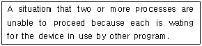
- deadlock
- database
- spooling
- compiler
(정답률: 63%)
4과목: 정보 통신 일반
51. 반송파주파수의 위상을 한개 이상의 bit 조합에 일대일로 대응시켜서 보내는 변조방식은?
- 주파수변조방식
- 진폭변조방식
- 위상변조방식
- 펄스변조방식
(정답률: 35%)
52. 4위상 변조를 하여 데이터를 전송하는데 신호의 전송 속도가 60보오(baud)라 할 때 이것을 bps 속도로 나타내면 얼마인가?
- 120
- 60
- 240
- 200
(정답률: 30%)
53. FEP(Front-End Processor)의 기능이 아닌 것은?
- 에러의 검출과 수정
- 여러 통신라인을 중앙 컴퓨터에 연결
- 데이터 파일(file)의 영구 보전
- 터미널의 메시지(message)가 보낼 상태로 있는지 받을 상태로 있는지 검색
(정답률: 43%)
54. 단말기에서 MODEM과 연결되는 25핀 커넥타의 2번 핀의 기능 정의는?
- 송신준비완료(CTS)
- 송신요구(RTS)
- 수신데이타(RXD)
- 송신데이타(TXD)
(정답률: 37%)
55. 리얼타임 시스템(Real Time System)으로 처리하는데 가장 적절한 업무는?
- 월간판매분석
- 좌석예약업무
- 성적관리
- 급여계산
(정답률: 77%)
56. 변복조기에서 디지털신호를 아날로그신호로 바꾸는 것을 무엇이라고 하는가?
- 등화
- 변조
- 증폭
- 압축
(정답률: 71%)
57. LAN의 특징과는 거리가 먼 것은?
- 정보처리기기의 재배치 및 확장성이 뛰어나다.
- 종합적인 정보전송이 가능하다.
- 경로 선택이 필요하다.
- 광대역 전송매체의 사용으로 고속통신이 가능하다.
(정답률: 43%)
58. 인터넷에서 제공되는 서비스가 아닌 것은?
- WWW
- FTP
- PLUG & PLAY
(정답률: 66%)
59. 아래와 같이 어떤 순간에 동시에 송수신이 가능한 전송 방식은?
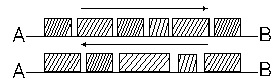
- HALF-DUPLEX
- FULL-DUPLEX
- TELETEX
- SIMPLEX
(정답률: 54%)
60. 비동기식 전송에서 옳지 않은 설명은?
- 스타트 비트와 스톱 비트가 있다.
- 문자 사이 마다 휴지기간이 있을 수 있다.
- 동기용 문자가 쓰인다.
- 동기는 문자 단위로 이루어 진다.
(정답률: 37%)